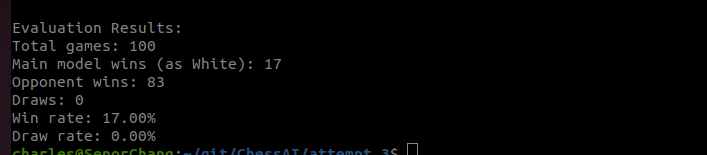
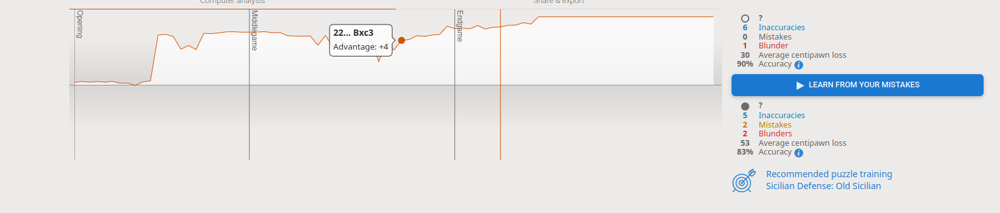

Results & Documentation
Project Results
Our chess AI has achieved significant milestones in both performance and implementation.
From technical architecture to real-world testing, here's a comprehensive overview of our results.
Technical Architecture
The ChessAI system consists of several key components:
- Chess Engine Core: Implements the game logic and move generation
- AI Models: SVM-based move evaluator and attention-based neural network
- Robotics Interface: Integration with UR3e robotic arm and custom hardware
- Web Interface: User interaction and game visualization
Implementation Details
Chess Engine
- Move generation using bitboard representation
- Efficient move validation and filtering
- Position evaluation through neural network
- Move quality assessment and ranking
AI Components
- SVM model trained on 16,000 high-quality games
- Feature engineering for position evaluation
- Attention-based neural network with 3.9M positions
- Optimized training pipeline with dropout and weight decay
Robotics Integration
UR3e Robotic Arm
Controlled via ROS2 for precise piece movements
Custom End Effector
Specialized design for reliable piece manipulation
Computer Vision
Advanced board state detection system
Chess Clock System
Custom GUI and housing for automated timing
Performance Results
Key Achievements
- Successfully implemented an attention-based neural network architecture for move prediction
- Trained the model on 3.9M chess positions from master-level games
- Achieved strong performance through spatial move encoding and position evaluation
- Integrated with Lichess API for online play against human opponents
- Created a functional Chess Robot that brings the AI into the physical world

Performance against Stockfish set to 1650 ELO

Lichess API integration test results
Future Development Path
Planned Enhancements
Based on our current results, we've identified several areas for improvement:
- Value Head Integration: Adding position evaluation capabilities to enable alpha-beta pruning
- Search Implementation:
- Implementing alpha-beta pruning with efficient move ordering
- Using neural network predictions for move ordering to improve pruning efficiency
- Leveraging the value head for position evaluation during search
- Training Enhancement: Exploring self-play and reinforcement learning techniques